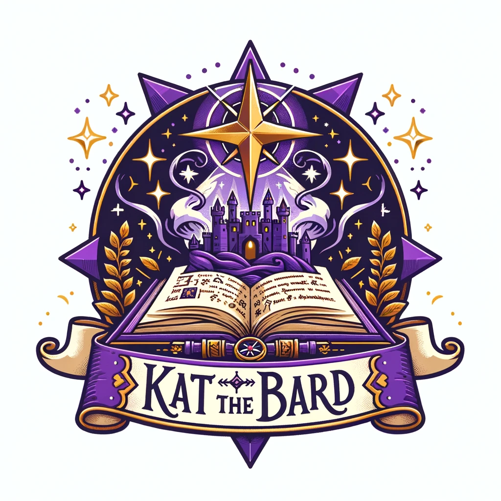

World Building Questionnaire
What is the genre of your world?
Fantasy: A world filled with magic, mythical creatures, and enchanted lands.
Sci-Fi: A futuristic or technologically advanced world, often set in space or involving advanced science.
Steampunk: A blend of historical and futuristic elements, often featuring steam-powered technology.
Horror: A world designed to evoke fear, featuring terrifying creatures, dark magic, and eerie atmospheres.
Other:
What is your campaign's predominant mood or tone?
Epic: Grand adventures with world-ending stakes, serious, significant and earnest.
Adventurous: A mix of fun and lighthearted moments with the potential for deep emotional or dark scenes.
Mystical: Enigmatic and enchanting, focusing on the mysterious and the magical.
Comedic: Lighthearted and humorous, often not taking itself too seriously.
Grimdark: Bleak and gritty, where moral ambiguity prevails and hope is scarce.
Romantic: Centered around personal relationships and emotions, potentially with a historical or fantastical twist.
Other:
What type of conflict drives the narrative in your world?
Instability: A shift in the world’s status quo.
Unfamiliarity: Players encounter a strange and challenging environment.
How do threats or villains actively engage with the players in your world?
Invasion: An external force threatening to conquer or destroy critical aspects of the world.
Corruption: An insidious influence that corrupts individuals and institutions from within.
Natural Disaster: Frequent or significant environmental or magical cataclysms that challenge survival.
Political Intrigue: Power struggles and courtly machinations that ensnare the players in webs of deceit.
Ancient Evil: A long-forgotten evil that has awakened and poses a unique and catastrophic threat.
Rival Adventurers: Other groups or influential individuals that compete against or oppose the players.
Other:
What broad goal or quest is central to the campaign?
Artifact Recovery: Quest to find and secure ancient and powerful artifacts.
Kingdom Building: Players are involved in establishing and growing a new settlement or kingdom.
Divine Conflict: Players are caught in the affairs of gods, possibly defending against a divine war or fulfilling prophecies.
Exploration: Discovering new lands, civilizations, or dimensions previously unknown or inaccessible.
Revolution: Leading or participating in an uprising against an oppressive regime or tyrant.
Mystery Solving: Unraveling a complex series of mysteries or crimes with significant implications.
Other:
Is your world's story high or low concept?
High Concept: Central idea dominates the narrative.
Low Concept: Focus on characters and storytelling.
What is the primary setting of your world?
Urban: Cities and civilizations.
Rural: Wilderness and sparse settlements.
Mixed: Blend of urban and rural elements.
What is the prevalence of magic in your world?
High Magic: Magic is widespread and influential.
Medium Magic: Magic is accessible but not all-pervasive; magical elements are significant but not overwhelming.
Low Magic: Magic is rare and mysterious.
Are there any additional details about the world or campaign that you want to include? For example, are there any specific races, creatures, or regional ecosystems you want to include?
Generate World Summary